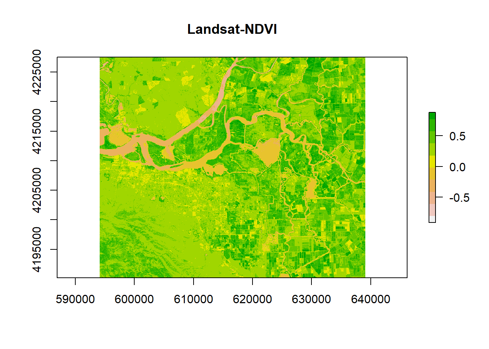
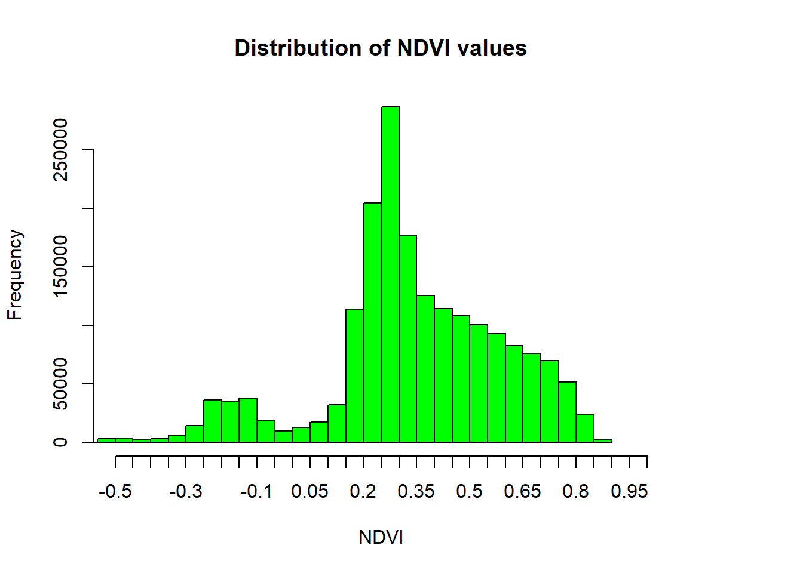
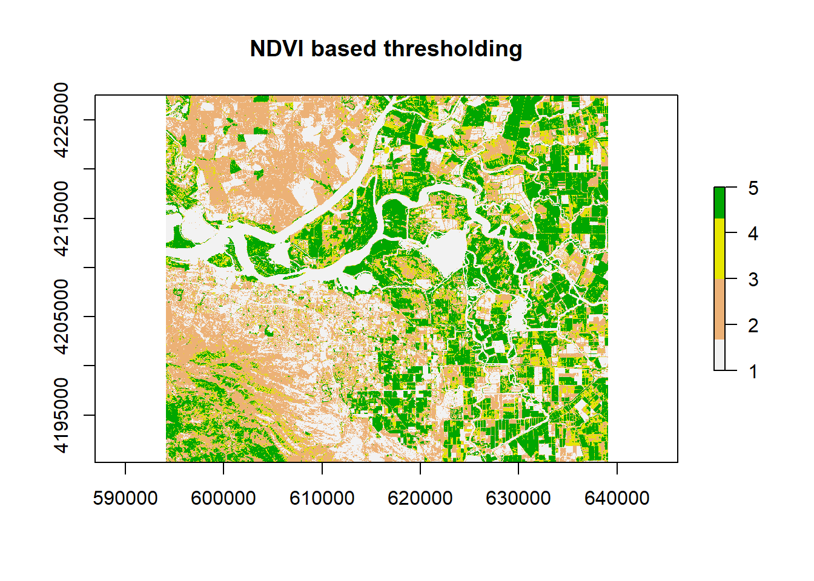
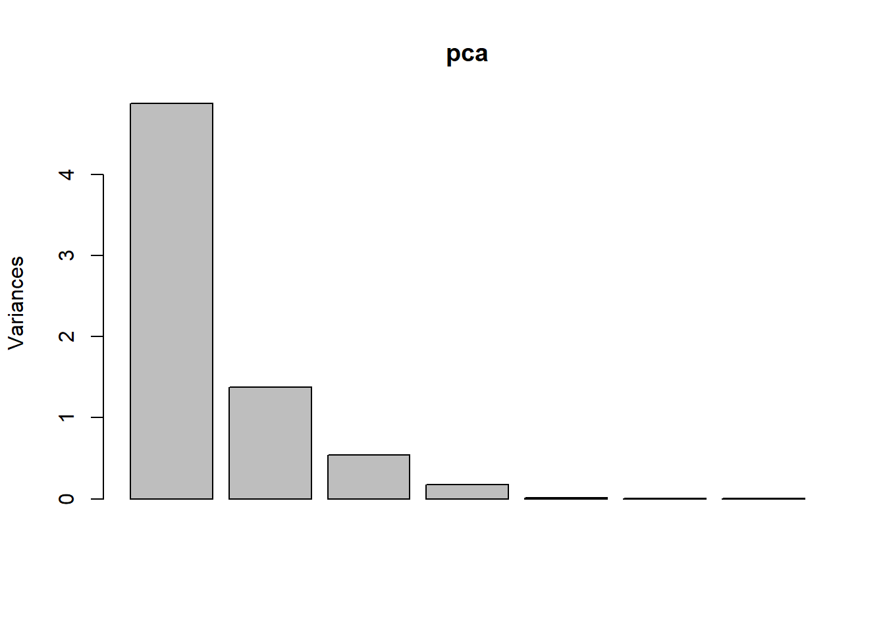
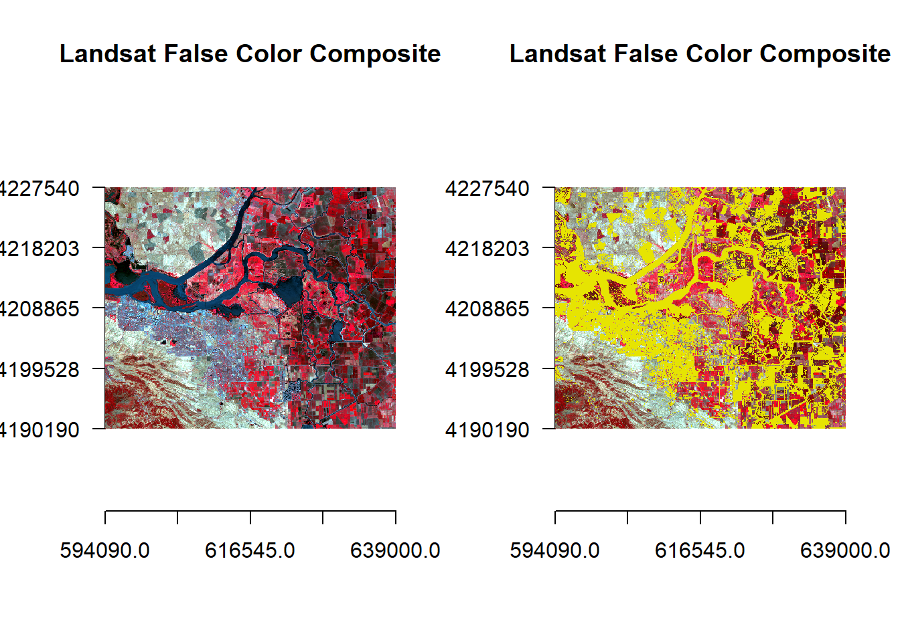

Chapter 3 Computation of indicators
3.1 NDVI Index
We can perform some mathematical operations over grid cells. One of the most famous index used in Remote Sensing Image Analysis, is the Normalized Difference Vegetation Index
# let's define the function to compute ndvi index
vi <- function(img, k, i) {
bk <- img[[k]]
bi <- img[[i]]
vi <- (bk - bi) / (bk + bi)
return(vi)
}
# plot
ndvi <- vi(landsat, 5, 4)
plot(ndvi, col = rev(terrain.colors(10)), main = "Landsat-NDVI")
# view histogram of data
hist(ndvi,
main = "Distribution of NDVI values",
xlab = "NDVI",
ylab= "Frequency",
col = "green",
xlim = c(-0.5, 1),
breaks = 30,
xaxt = 'n')
axis(side=1, at = seq(-0.5,1, 0.05), labels = seq(-0.5,1, 0.05)) In order to identify better the areas with vegetation, we can reclassify differently the values.
vegc <- reclassify(ndvi, c(-Inf,0.25,1, 0.25,0.3,2, 0.3,0.4,3, 0.4,0.5,4, 0.5,Inf, 5))
plot(vegc,col = rev(terrain.colors(4)), main = 'NDVI based thresholding')
3.2 Principal Component Analysis
Multi-spectral data are sometimes transformed to helps to reduce the dimensionality and noise in the data. The principal components transform is a generic data reduction method that can be used to create a few uncorrelated bands from a larger set of correlated bands.
You can calculate the same number of principal components as the number of input bands. The first principal component (PC) explains the largest percentage of variance and other PCs explain additional the variance in decreasing order.
# Take a random sample from the cell values
set.seed(1)
sr <- sampleRandom(landsat, 10000)
# perform PCA to the resulting matrix
pca <- prcomp(sr, scale = TRUE)
screeplot(pca)
The first principal component highlights the boundaries between land use classes or spatial details, which is the most common information among all wavelengths.
pci <- predict(landsat, pca, index = 1:2)
pc2 <- reclassify(pci[[2]], c(-Inf,0,1,0,Inf,NA))
par(mfrow = c(1,2))
plotRGB(landsatFCC, r = 1, g = 2, b = 3, axes = TRUE, stretch = "lin", main = "Landsat False Color Composite")
plotRGB(landsatFCC, r = 1, g = 2, b = 3, axes = TRUE, stretch = "lin", main = "Landsat False Color Composite")
plot(pc2, legend = FALSE, add = TRUE)